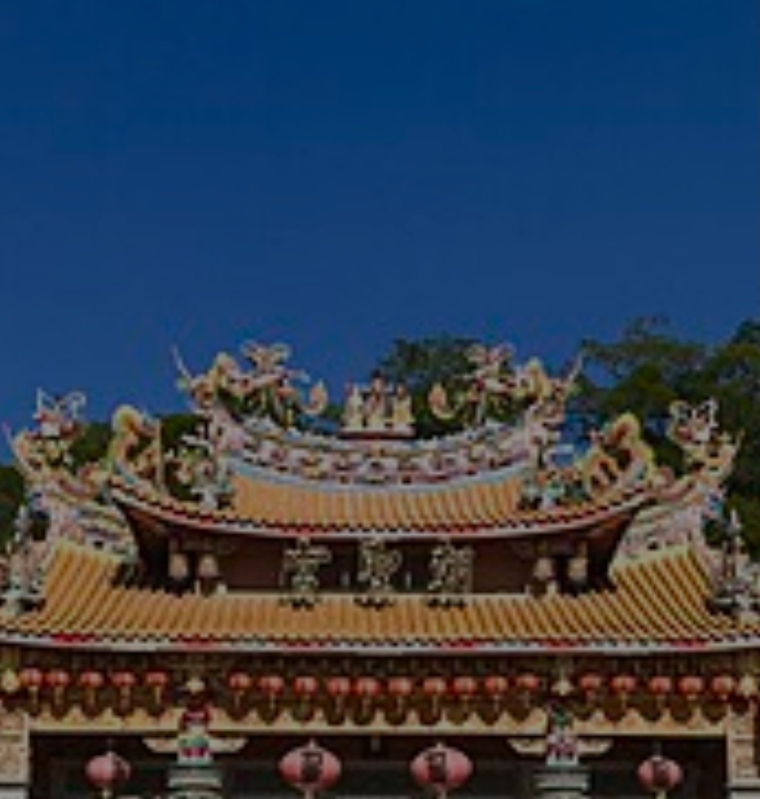
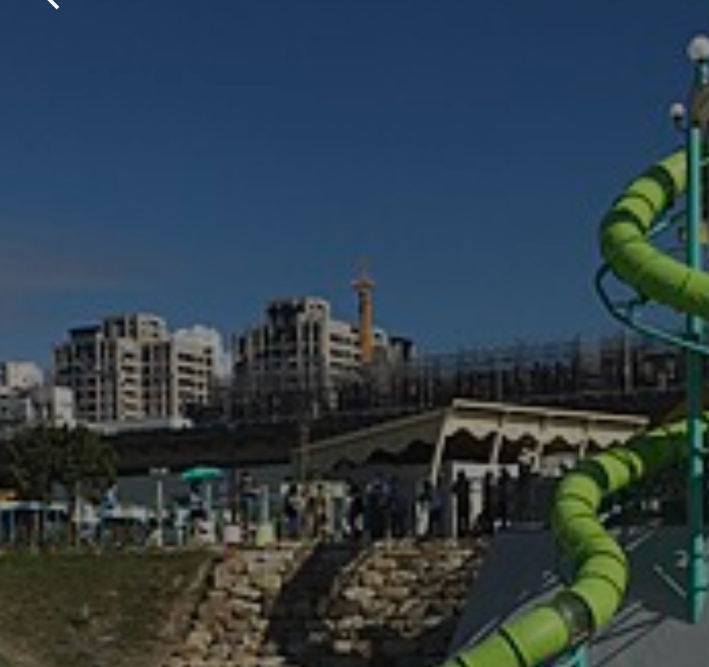

AI 隨行的旅行說書人
體驗歷史
體驗歷史
而不只是風景
你的隨身 AI 旅行說書人。走到哪，就把那裡的來歷、傳說與歷史，說給你聽。
向下捲動
正在導覽
摧毀與重生的百年豪賭
St. Peter's Basilica · Vatican
別再低頭盯著螢幕。Lorescape · 地誌手記
抬起眼睛，世界本身就是展品。
功能 01
為眼前的風景，
即時寫一篇故事
不是條列式的百科資料。Lorescape 為你經過的每座地標、古蹟與山林，當場編寫一篇有人物、有轉折、值得細讀的故事。
值得細讀的歷史長文
有起承轉合、有人物與懸念的敘事，而不是冰冷的年份與條目。
一鍵化為語音
把手機收進口袋，邊走邊聽它把這裡的來歷娓娓道來。

台中朝聖宮Chaosheng Temple · Taichung
功能 02
Many Angles, One Place
同一座地標，
不只一個故事
權謀、傳說、建築祕辛——AI 在每個地點為你備好幾種切入角度。挑一個最吸引你的，開始聆聽。
01
摧毀與重生的百年豪賭
儒略二世決定拆毀君士坦丁大帝的千年古教堂，這場瘋狂重建竟耗時百餘年。
02
祭壇之下的神聖祕密
世界上最大的教堂並非教宗的主教座堂，因為它底下埋藏著更神聖的祕密。
03
文藝復興巨匠的接力賽
米開朗基羅與拉斐爾輪番上陣，在同一座教堂留下各自的瘋狂印記。
正在播放
Anno · I
摧毀與重生的
百年豪賭
百年豪賭
St. Peter's Basilica
02:3106:38

功能 03 · Explore Nearby
探索身邊的風景
翻開地圖之前，先看看方圓之內。Lorescape 依距離與主題，為你列出附近值得停留的每一個角落——每一種風景，都有屬於它的故事。
依距離篩選，只看走得到的地方
多種主題分類，各有專屬故事
收藏想去的地點，隨時回來
自然景觀
人文古蹟
信仰聖地
城市地標
功能 04
你的旅程，自動成冊
每一次駐足，都被悄悄寫進一本屬於你的旅行手記。
I
Auto Journal
自動成篇
每聽完一段故事，就自動留下一篇可回味的手記。
II
Trips
依旅程歸檔
把沿途的記錄整理成一趟趟旅程，井然有序。
III
Timeline
沿時間軸重溫
順著時間軸回看，隨時重返走過的任何一個角落。